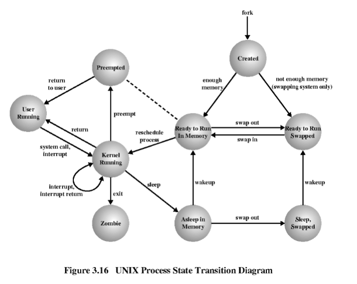

Jeśli strona była dla Ciebie pomocna, możesz wesprzeć mnie w jej utrzymaniu na buycoffee.to/mgarbowski
Definicje podstawowe i obowiązkowe:
System operacyjny
Zbiór programów i procedur spełniających dwie podstawowe funkcje:
- zarządzanie zasobami systemu komputerowego,
- tworzenie maszyny wirtualnej - udostępnianie użytkownikowi abstrakcji systemu łatwiejszej do wykorzystywania / oprogramowywania
Zasób systemu
Zasobem systemu jest każdy jego element sprzętowy lub programowy, który może być przydzielony danemu procesowi. Zasobami system zarządza w czasie i przestrzeni.
- zasoby sprzętowe
- czas procesora
- pamięć operacyjną
- urządzenia zewnętrzne
- inne komputery powiązane poprzez sieć teleinformatyczną
- zasoby programowe
- pliki
- bufory
- semafory
- tablice systemowe
Proces
Wykonujący się program wraz z jego środowiskiem obliczeniowym, podstawowy obiekt dynamiczny w systemie operacyjnym.
Wymagania odnośnie systemu operacyjnego odnośnie zarządzania procesami: * umożliwienie przeplatania się wykonywania procesów * akceptowalnie krótki czas odpowiedzi systemu * zarządzanie przydziałem zasobów poszczególnym procesom * udostępnianie mechanizmów do komunikacji międzyprocesowej * udostępnianie mechanizmów do tworzenia procesów
Powłoka (interpreter poleceń)
Program udostępniający usługi systemu operacyjnego dla użytkownika lub innych programów. Program uruchamiany standardowo po otwarciu sesji użytkownika przez proces login.
Interpreter poleceń funkcjonuje według następującego schematu:
- wypisuje monit
- czeka na wprowadzenie tekstu z klawiatury
- analizuje wiersz polecenia i znajduje program
- zleca jądru wykonanie programu
- przyjmuje odpowiedź od jądra, ponownie wypisuje monit.
Sekcja krytyczna
Fragment programu, w którym występują instrukcje dostępu do zasobów dzielonych. Instrukcje tworzące sekcje krytyczne muszą być poprzedzone i zakończone operacjami realizującymi wzajemne wykluczanie.
Semafor
Zmienna nazwana semaforem, inicjowana nieujemną wartością całkowitą i zdefiniowana poprzez definicje niepodzielnych operacji P (proberen) i V (verhogen)
P(S):
while S <= 0 do
/* Proces jest zablokowany */;
S := S − 1;
V(S): S := S + 1;Wstęp
Tryby przetwarzania systemu komputerowego
- tryb wsadowy, pośredni (ang. off-line, batch), autonomiczne
wykorzystanie komputera bez konieczności obecności użytkownika
- duża przepustowość systemu komputerowego,
- możliwy długi okres oczekiwania na wyniki, ograniczone możliwości szeregowania, niemozność bieżącej kontroli procesu wykonania.
- tryb interaktywny, bezpośredni (ang. on-line, interactive),
konwersacyjne współdziałanie użytkownika z systemem komputerowym z
wykorzystaniem terminala komputera.
- szybka reakcja systemu, możliwość kontroli przebiegu procesu wykonania,
- mniejsze wykorzystanie zasobów systemu komputerowego
- tryb czasu rzeczywistego, system, którego użytkownikiem jest proces
technologiczny narzucający pewne wymagania czasowe. Dwa podejścia:
- system jest zobowiązany do reagowania na zdarzenia zewnętrzne w ustalonym nieprzekraczalnym okresie.
- system bada okresowo stan procesu technologicznego
Rola przerwania w systemie komputerowym
- Umożliwia oddanie przez program użytkowy kontroli na rzecz systemu operacyjnego (wywołania systemowe)
- Umożliwia przełączanie kontekstu i wieloprogramowanie - przerwanie zegarowe
- Sygnalizuje zakończoną operację wejścia/wyjścia
Pojęcie blokady w systemie operacyjnym
Blokada (deadlock) występuje kiedy proces (lub wątek) oczekuje na dostęp do dzielonych zasobów, które są używane przez inny proces, który też czeka na dostęp do jakichś zajętych współdzielonych zasobów (i tworzą cykl zależności). Blokada oznacza że żaden z procesów nie może zmienić swojego stanu i będą czekać w nieskończonośc.
Przeznaczenie montowania systemu plików
System operacyjny umożliwia dostęp do plików w jego systemie plików przez podanie ścieżki. Żeby móc operować na pliku z innego systemu plików (np. podłączonego pendrive’a) trzeba zamontować zewnętrzny system plików do głównego systemu (drzewo zewnętrznego systemu zostaje poddrzewem głównego systemu). Po zamontowaniu można dostać się do plików podając ich ścieżki w głównym systemie.
Programowanie w języku powłoki:
Użytkownicy w systemie Unix
Użytkownicy są opisani w pliku /etc/passwd
- nazwa użytkownika
- hasło (zaszyfrowane albo w ogóle ukryte)
- uid - id użytkownika
- gid - id grupy
- informacje o użytkowniku
- katalog domowy
- domyślna powłoka
Grupy są opisane w pliku /etc/group
- nazwa grupy
- hasło grupy
- numer grupy
- lista użytkowników należących do grupy
W pliku /etc/shadow są przechowywane zaszyfrowane hasła
użytkowników i dodatkowe informacje
Prawa dostępu do plików
Bity rwxrwxrwx * pierwsze 3 dotyczą właściciela pliku * drugie 3 dotyczą grupy właściciela (użytkowników należących do tej grupy) * ostatnie 3 dotyczą pozostałych użytkowników
- r - read
- w - write
- x - execute
Dla katalogów oznaczają
- r - można zobaczyć zawartość katalogu
ls - w - można utworzyć plik w katalogu
- x - można wejść do katalogu
cd
Znaczenie bitów SUID, SGID
SUID - plik jest zawsze wykonywany z uprawnieniami właściciela. Np.
program passwd - każdy użytkownik może zmienić swoje hasło ale to wymaga
zmiany pliku /etc/shadow dostępnego tlyko dla
administratora
SGID - plik jest zawsze wykonywany z uprawnieniami grupy właściciela (analogicznie do SUID). Dla katalogu oznacza że każdy nowo utworzony plik będzie miał nadaną grupę właściciela katalogu
Sticky bit - nie dotyczy plików tylko katalogów, tylko właściciel i
root może usuwać pliki z katalogu (np. /tmp)
Główne zmienne powłoki
HOME- katalog domowyIFS- Internal Field Separator - znaki rozdzielające elementy składni w linii (np. domyślnie oddzielanie spacją)PATH- lista katalogów, w których szukane są pliki wywoływanych komend (np./bin,/usr/bin)PS1- pierwszy znak zachęty$PS2- drugi znak zachęty>(kontynuacja linii)SHELL- domyślna podpowłokaTERM- rodzaj terminala
Parametry powłoki
Nazwa i argumenty aktualnie wykonywanej komendy
$0- nazwa wywoływanej komendy$1- pierwszy argument wywołania$9- dziewiąty argument wywołania$*- argumenty jako jeden łańcuch znaków"$1 $2 ..."$@- argumenty jako osobne łańcuchy znaków"$1" "$2" ...$#- liczba argumentów przekazanych przy wywołaniu lub przezset$?- kod wyjścia ostatnio wykonywanej komendy$$- pid aktualnej powłoki$!- pid ostatniego procesu wykonywanego w tle
Polecenia zewnętrzne a wbudowane – uzasadnienie rozróżnienia
Generalnie komendy są wykonywane jako oddzielne procesy ale niektóre czynności nie mogą być w ten sposób zrealizowane
Np. cd ma zmienić aktualny katalog powłoki, gdyby był
oddzielnym procesem, to zmieniłby aktualny katalog procesu dziecka -
dlatego musi być poleceniem wbudowanym
inne to np. break, shift,
return
Polecenia powłoki: read, set, export
read - podziel linię z wejścia na podstawie
IFS i przypisz poszeczególne wartości do zmiennych
set - podziel linię z wejścia na podstawie IFS
i przypisz kolejne wartości do $1, $2, …
export - zmienna środowiskowa będzie dziedziczona przez
procesy potomne
Pętle for/while/do w programowaniu powłoki
for wykonywana dla każdego słowa w liście słów
for i in /tmp /usr/tmp
do
rm -rf $i/*
donewhile - wykonywana tak długo jak spełniowy jest
warunek
i=1
while [ $i -le 5 ];
do
echo $i
i=`expr $i + 1`
doneuntil - wykonywana tak długo jak warunek
nie jest spełniony
i=1
until [ $i -ge 5 ];
do
echo $i
i=`expr $i + 1`
doneOdczyt pliku /etc/passwd z wykorzystaniem read/set/IFS
cat /etc/passwd | while IFS=: read username password uid other
do
echo "user: $username"
echo "uid: $uid"
donecat /etc/passwd | while read line
do
IFS=: set $line
echo "username: $1"
echo "uid: $3"
doneDefiniowanie i wywołania funkcji
Nie podaje się sygnatury, argumenty przetwarza się tak samo jak
argumenty skryptu $1, $2,
shift
echo_all () {
while [ "x$1" != "x" ];
do
echo $1
shift
done
}
# wywołanie z 3 argumentami
echo_all a b cProcesy i wątki:
Pojęcia procesów współbieżnych/równoległych/rozproszonych
- procsy współbieżne - nie ma wymogu, żeby kolejny proces startował po zakończeniu poprzedniego (nie muszą być szeregowe)
- procesy równoległe - może istnieć chwila czasu, kiedy wykonują się
dokładnie w tej samej chwili czasu (nie muszą ale nie można tego
wykluczyć)
- musi być więcej niż jedno ALU (w praktyce wiele rdzeni, wiele procesorów)
- przereklamowana? (zysk zależy od poziomu ziarnistości dekompozycji problemu, są obliczenia które świetnie się nadają do zrównoleglania (grafika))
- procesy rozproszone - wykonują się na sprzęcie rozproszonym
- Nie mają współdzielonej pamięci
- Scentralizowany sprzęt nie wymaga komunikacji sieciowej
- Są z założenia równoległe
Graf przejść stanów procesów w systemie Unix - prosty i złożony (System V)
- Wykonuje operację wejścia/wyjścia i zaczyna oczekiwanie na rezultat (ogólnie blokuje się, też np zawiesza na semaforze)
- Scheduler wybiera inny proces
- Scheduler wybiera ten proces
- Rezultat operacji IO jest już dostępny
 Bardziej rozbudowana wersja poprzedniego grafu
Running -> User running, Kernel running
Blocked -> Asleep in Memory, Sleep, Swapped
Ready -> Ready to Run In Memory, Ready to Run Swapped, Preempted
Stan Zombie
- Stan zombie istnieje po to, żeby proces rodzic mógł sprawdzić kod wyjścia procesu potomnego
- Pamięć już jest zwolniona, proces nie istnieje tylko zostaje deskryptor w tablicy procesów pamiętający kod wyjścia
- Zombie nie może zostać zabity sygnałem (już nie żyje)
Stan preempted (wywłaszczony)
- był wykonywany w ostatnim kwancie, wywłaszczony z czasu procesora przez planistę
- dobrze jest przydzielić mu następny kwant jeśli nie ma innego kandydata o wyższym priorytecie bo dalej jest ważny cache
Przeznaczenie i budowa wektora przerwań
- Wektor przerwań zawiera adresy procedur obsługi przerwań - np tablica wskaźników do procedur adresowana numerem przerwania
- Każde urządzenie IO ma odpowiadającą mu procedurę obsługi w wektorze przerwań
- Planista przejmuje sterowanie po przerwaniu zegarowym (procedura obsługi przerwania zegarowego)
- Między wykonywaniem dwóch procesów zawsze jest planista
Obsługa przerwania 1. Sprzętowo zapamiętane na stosie licznik rozkazów, itp. 2. Sprzętowo ładowana nowa wartość licznika rozkazów z wektora przerwań 3. Procedura w języku asemblera zapamiętuje wartości rejestrów 4. Procedura w języku asemblera ustala nowy stos 5. Obsługa przerwania w języku C (często odczyt i buforowanie wejścia) 6. Planista wybiera następny proces do wznowienia 7. Procedura w języku asemblera przygotowuje i wznawia nowy bieżący proces
Porównanie własności procesów i wątków
- Dzielenie zasobów
- każdy proces ma oddzielną przestrzeń adresową, są od siebie oddzielone
- wątki współdzielą pamięć procesu i inne zasoby (otwarte pliki itd)
- wątki mają oddzielne stosy ale w tej samej przestrzeni adresowej
- Wydajność
- Tworzenie i niszczenie wątków jest dużo szybsze - dobre jeśli liczba wątków może sie dynamicznie zmieniać
- Ochrona
- proces nie ma dostępu do pamięci innych procesów
- wątki działają na tej samej przestrzeni adresowej, można zamazać stos innego wątku
- kod dla wątków jest pisany tak żeby ze sobą współpracowały
- Oddanie kontroli
- wątki mają operację typu
thread_yield- oddaj kontrolę nad CPU innemu wątkowi - wątki z założenia współpracują a nie walczą o czas CPU
- wątki mają operację typu
- Komunikacja
- procesy - trudniejsza, można użyć wywołań systemowych żeby zacząć współdzielić pamięć
- wątki - łatwa, przez wspólną pamięć
Porównanie wątków poziomu jądra i wątków poziomu użytkownika
- Realizacja
- Kernel-level - tworzeniem, niszczeniem i szeregowaniem zajmuje się jądro systemu
- User-level - realizowane przez biblioteki w językach programowania, niewidoczne dla jądra, mogą być zawsze zaimplementowane niezależnie czy system operacyjny to wspiera
- Czas przełączenia
- Przełączenie wątków poziomu jądra jest kosztowne, wymaga pełnego przełączenia kontekstu, przeładowania pamięci, cache staje się nieważny
- Przełączenie wątków poziomu użytkownika jest bardzo szybkie - kilka instrukcji maszynowych w procedurze bibliotecznej
- Blokujące operacje IO
- User-level - blokuje cały proces (bo jądro nic nie wie o tym że proces ma wiele wątków)
- Kernel-level - nie blokuje procesu, jądro może przełączyć się na inny wątek tego samego procesu
- Szeregowanie
- Dla wątków poziomu użytkownika można stosować algorytm szeregowania specyficzny dla aplikacji i zapewnić lepszą wydajność - można wykorzystać wiedzę co robi każdy z wątków (dispatcher, worker itd)
- Dla wątków poziomu jądra, jądro nie ma takich informacji (można conajwyżej ustawiać odpowiednie priorytety)
- Liczba
- Koszt wątków poziomu użytkownika jest bardzo mały, można ich tworzyć bardzo dużo
- Nie ma sensu tworzyć więcej wątków poziomu jądra niż logicznych procesorów
- Można rozgałęzić jeden wątek poziomu jądra na wiele wątków bibliotecznych (multiplexing)
- Opłaca się robić recykling wątków poziomu jądra - zamiast ubijać po zakończeniu pracy to oznaczyć jako wolny i przydzielić mu nową pracę
- Np. 1000 wątków bibliotecznych ale tylko 4 poziomu jądra które wykonują się równolegle
Architektura wielowątkowa w systemie Solaris
* Procesy * standardowe z Unixa * Wątki poziomu użytkownika * zaimplementowane przez bilblioteki * niewidoczne, nierozróżnialne z punktu widzenia jądra * interfejs do współbieżności * Wątki jądra * podstawowe elementy szeregowane i rozmieszczane na procesorach * Procesy lekkie, Lightweight processes, LWP * odwzorowanie między wątkami poziomu jądra a wątkami poziomu użytkownika * odwzorowuje jeden wątek jądra w jeden lub więcej wątków poziomu użytkownika * rozróżnialne i szeregowane przez jądro * mogą być uruchomione równolegle w architekturze wieloprocesorowej
Metody konstrukcji serwerów usług
- Serwer wielowątkowy
- współbieżność
- blokujące wywołania systemowe
- Proces jendowątkowy
- brak współbieżności
- blokujące wywołania systemowe
- słabe zużycie CPU
- Automaty skończone
- współbieżne
- nieblokujące wywołania systemowe
- przerwania
- trudne do zaprogramowania
- asynchroniczne wejście wyjście
Szeregowanie z wywłaszczaniem i bez wywłaszczania
Szeregowanie bez wywłaszczania
- Planista wybiera proces, proces wykonuje się dopóki nie się nie zablokuje (na IO, semaforze itd) albo dobrowolnie odda kontrolę
- Planista nie podejmuje decyzji szeregujących na przerwaniach zegarowych
- Czas CPU nie jets dzielony na kwanty
Szeregowanie z wywłaszczaniem
- Czas CPU jest podzielony na kwanty
- Wybrany proces może wykonywać się conajwyżej przez dany kwant czasu
- Po upłynięciu czasu przychodzi przerwanie zegarowe i planista może wybrać inny proces
Szeregowanie procesów - wskaźniki jakości szeregowania dla różnych trybów przetwarzania
Uniwersalne:
srpawiedliwe - każdemu uczciwą część CPU
zgodne z przyjątą polityką
wyrównywanie - wykorzystanie wszystkich zasobów systemu
Systemy wsadowe
- przepustowość - maksymalizaja liczby zadań w czasie
- czas w systemie - minimalny między uruchomieniem a zakończeniem
- wykorzystanie procesora - maksymalne zajęcie procesora
- szeregowanie bez wywłaszczania jest dobre bo planista nie traci tyle czasu
Systemy interaktywne
- czas odpowiedzi - możliwie szybka odpowiedź na żądanie
- proporcjonalność - spełnianie oczekiwań użytkownika
- szregowanie z wywłaszczaniem jest konieczne
Systemy czasu rzeczywistego
- spełnianie wymagań - ograniczenia czasowe
- przewidywalność - bez utraty jakości w multimediach
- wywłaszczanie może nie być potrzebne bo dokładnie wiadomo ile czasu będzie się wykonywać dany proces
Wzajemne wykluczanie i synchronizacja:
Wyścig i warunki wyścigu (race conditions)
Sytuacja. w której dwa lub więcej procesów wykonuje operację na zasobach dzielonych, a ostateczny wynik tej operacji jest zależny od momentu jej realizacji
Warunki konieczne implementacji sekcji krytycznej
- Wewnątrz SK może przebywać tylko jeden proces
- Jakikolwiek proces znajdujący się poza SK, nie może zablokować innego procesu pragnącego wejść do SK
- Każdy proces oczekujący na wejście do SK powinień otrzymać prawo dostępu w rozsądnym czasie.
Mechanizmy realizacji wzajemnego wykluczania z aktywnym oczekiwaniem – opis i porównanie
Wady każdego mechanizmu z aktywnym oczekiwaniem * marnuje się czas procesora - proces kręci się w pętli sprawdzając czy może wejść do SK * możliwość blokady systemu przy wielopriorytetowym sposobie szeregowania procesów - inwersja priorytetów * proces o niższym priorytecie jest w sekcji krytycznej * proces o wyższym priorytecie dostaje CPU i marnuje czas na sprawdzanie czy może wejść do SK * proces o niższym priorytecie czeka na czas CPU żeby móc wyjść z sekcji krytycznej * planista może przydzielić czas procesowi, który czeka na wejście do sekcji krytycznej - bez sensu
Blokowanie przerwań
- Proces blokuje przerwania wchodząc do SK i odblokowuje wychodząc
- Skuteczna ale tylko przy jednym procesorze
- Jeśli nie odblokuje przerwań to ubija cały system (nie ma przerwania zegarowego)
- Stosowalne tylko w implementacji jądra (i tak się unika)
- Absolutnie nie dla procesów użytkowych
Zmienne blokujące - niepoprawne
- Mamy dzieloną zmienną
lockjeśli0to nie ma procesu w SK, jeśli1to jest - Proces sprawdza czy
lock == 0, ustawialock = 1i wykonuje operacje SK - Niepoprawne bo między odczytem a zapisem
lockmoże nastąpić przełączenie kontekstu i oba procesy odczytają wartość0i wejdą do SK
Ścisłe następstwo - niepoprawne
Proces 0
while (TRUE) {
while (turn != 0); // wait
critical_section();
turn = 1;
noncritical_section();
}Proces 1
while (TRUE) {
while (turn != 1); // wait
critical_section();
turn = 0;
noncritical_section();
}- Brytyjscy dżentelmeni
- Proces może wejść do SK jeśli jest jego tura, jak skończy przekazuje drugiemu
- Jest złamany warunek 2, bo P0 może zostać zablokowany przez P1
znajdujący się poza sekcją krytyczną (P1 już nie ustawi
turn = 0) - Nie ma wyścigu ale jest zagłodzenie
Algorytm Petersona
- Połączenie zmiennych blokujących i ścisłego następstwa
- Każdy proces przed wejściem do SK wywołuje
enter_region, a po wyjściuleave_region, podaje swój numer jako argument
#define FALSE 0
#define TRUE 1
#define N 2
int turn;
int interested[N]; /* initially 0 */
enter_region(int process) { /* process nr 0 or 1 */
int other = 1 - process;
interested[process] = TRUE;
turn = process;
while((turn == process) && (interested[other] == TRUE)); // wait
}
leave_region(int process) {
interested[process]=FALSE;
}W warunku jest logiczne and czyli proces wejdzie do SK
jeśli jeden z nich nie jest spełniony
- Jeśli drugi proces nie jest zainteresowany to mogę wejść
turn == processjest spełnione tylko dla jednego procesu na raz
Jeśli 2 procesy wywołują enter_region w tym samym
czasie, to
- oba ustawią
interested[process] = Trueprzed dojściem do pętli - pierwszy ustawi
turnna swój numer i będzie czekać w pętli - drugi ustawi
turnna swój numer i będzie czekać w pętli ale tym samym wpuścił pierwszego
Instrukcja TSL
- Rozwiązanie sprzętowe, jest instrukcja assemblerowa
tsl- test and set lock (xchg- exchange) - Instrukcja zamienia zawartości rejestru i słowa w pamięci
- Jest niepodzielna, nie może zostać przerwana bo to jedna instrukcja
- Rozwiązuje problem ze zmiennymi blokującymi
- Jest dzielona zmienna
flag, jeśli0to nie ma procesu w SK, jeśli1to jest - W rejestrze początkowo wartość
1 - Przed wejściem do SK proces wywołuje
enter_regiona po wyjściuleave_region
enter_region:
tsl register, flag
cmp register, #0
jne enter_region
retleave_region:
mov flag, #0
ret- Po wykonaniu
tsl, na pewnoflag == 1 - Jeśli przed
tslbyłoflag == 0to wchodzę do sekcji krytycznej - Jeśli przed
tslbyłoflag == 1to powtarzam w pętli
Mechanizmy realizacji wzajemnego wykluczania z wstrzymywaniem procesu - opis i porównanie
Nie marnuje się czasu procesora na sprawdzanie czy proces może wejść do sekcji krytycznej, bo jeśli nie może to zostaje zawieszony, a kiedy w końcu będzie mógł to zostanie obudzony
Sleep i wakeup - niepoprawne
- Wywołanie systemowe
sleepzawiesza aktualny proces - Wywołanie systemowe
wakeup(pid)budzi proces o podanym id - Między sprawdzeniem warunku a wywołaniem
sleepmoże nastąpić przełączenie kontekstu i sygnałwakeupzostanie wysłany zanim drugi proces zaśnie czyli jest gubiony - bloada
#define N 100
int count = 0;
void producer() {
while (TRUE) {
produce_item();
if (count == N) {
sleep();
}
enter_item();
count++;
if (count == 1) {
wakeup(consumer);
}
}
}
void consumer() {
while (TRUE) {
if (count == 0) {
sleep();
}
remove_item();
count--;
if (count == N-1) {
wakeup(producer);
}
consume_item();
}
}Semafory
- Podobne działanie jak sleep i wakeup, tylko sygnały są zapamiętywane i nie mogą zostać zgubione
- Operacja
pzawsze opuszcza semafor ale może zablokować proces, dopóki inny proces nie wykonavna tym semaforze - Operacja
vpo prostu podnosi semafor - Mutex - semafor binarny
- kiedy nie trzeba zliczać syngałów tylko zapewnić wzajemne wykuczenie
- inicjowany jako
1 - można zaimplementować wykorzystując instrukcję
tsl - przed wejściem do sekcji krytycznej
mutex.p()- jeśli było1to ustawia na0i wchodzi, jeśli było0to czeka aż inny proces wywołamutex.v() - po wyjściu z sekcji krytycznej
mutex.v()- ustawia na1, umożliwia innym wejście do SK
Monitory
- Wysokopoziomowy mechanizm, musi być wspierany przez język programowania (kompilator odpowiada za działanie wzajemnego wykluczania)
- Obiekt, w każdej chwili tylko 1 proces może przebywać w którejś z jego metod
- Ogólnie to moduł grupujący procedury, zmienne i struktury danych, taki że tylko 1 proces może w danej chwili przebywać w tym module
- Implementacja zapewnia, że sygnały nie zostaną zgubione jak przy
sleepiwakeup(może wewnętrznie wykorzystywać semafor) - Instrukcje nie są atomowe ale mechanizm monitora zapewnia, że tylko 1 proces może wejść do SK
- Mało języków je faktycznie wspiera
- Wewnętrzna implementacja zapewnia wzajemne wykluczanie i udostępnia bezpieczny interfejs
- Monitor ma w sobie zmienne warunkowe
- Kiedy procedura wykrywa, że nie może kontynuować działania wykonuje
waitna zmiennej warunkowej i proces się zawiesza - Inny proces może wejść do sekcji krytycznej i wychodząc wykonać
signalna tej samej zmiennej warunkowej żeby obudzić poprzedni proces
- Kiedy procedura wykrywa, że nie może kontynuować działania wykonuje
Dwie koncepcje działania signal
- Hoare - proces wywołujący jest zawieszany, a obudzony kontynuuje działanie
- Hansen - proces wywołujący musi natychmiast opuścić monitor
Producent-konsument - poprawna realizacja z synchronizacją semaforami
#define N 100
semaphore mutex = 1;
semaphore empty = N;
semaphore full = 0;
void producer() {
while (TRUE) {
produce_item();
empty.p();
mutex.p();
enter_item();
mutex.v();
full.v();
}
}
void consumer() {
while (TRUE) {
full.p();
mutex.p();
remove_item();
mutex.v();
empty.v();
consume_item();
}
}mutex- zapewnia wzajemne wykluczanie w dostępie do buforaempty- liczba pustych slotów, które producent może zapełnić- producent zawiesi się, jeśli nie ma wolnego miejsca do zapełnienia
- konsument oznacza, że zwolnił miejsce
full- liczba zajętych slotów, które konsument może opróżnić- konsument zawiesi się, jeśli nie ma co konsumować
- producent oznacza, że zapełnił slot
produce_itemiconsume_itemznajdują się poza sekcją krytyczną bo nie wymagają wzajemnego wykluczania, a SK powinna być jak najkrótsza dla dobrej wydajnościempty.p()jest wołane przedmutex.p(), żeby konsument mógł dostać się do bufora i zwolnić slotmutex.v()ifull.v()można wykonać w dowolnej kolejności- dla operacji konsumenta analogicznie
Producent-konsument - poprawna realizacja z synchronizacją monitorami
Hipoetyczny język wspierający monitory
monitor Buffer
condition full
condition empty
integer count = 0
procedure put
begin
if count == N
then wait(full)
put_item()
count += 1
if count == 1
then signal(empty)
end
procedure remove
begin
if count == 0
then wait(empty)
remove_item()
count -= 1
if count == N-1
then signal(full)
end
end monitorprocedure producer
begin
while true do
begin
item = produce_item()
Buffer.put(item)
end
endprocedure consumer
begin
while true do
begin
item = Buffer.remove()
consume_item(item);
end
end- Jeśli bufor jest zapełniony to prodcent się zawiesi
- Wtedy konsument może wejść do SK, zwolni miejsce w buforze i wyśle sygnał
- Producent się obudzi i może kontynuować pracę
Przykładowe zadania projektowe:
Proste skrypty sh (bez rozszerzeń bash)
skrypt, który wysyła na wyjście linia po linii tekst ze
standardowego wejścia, poprzedzając każdą linię numerem linii
#!/bin/sh
i=1
read line
while [ "x$line" != "x" ]; do
echo "$i $line"
read line
i=`expr $i + 1`
doneskrypt, który przyjmuje jako argument id użytkownika i wypisuje na stdin nazwę użytkownika (korzysta z relacji w /etc/passwd)
#!/bin/sh
if [ "x$1" = "x" ];
then
echo "Pass user id as the first argument" >&2
exit 1
fi
uid=$1
while IFS=":" read username password userid _
do
if [ "x$userid" = "x$uid" ];
then
echo $username
exit 0
fi
done < /etc/passwd
echo "User not found" >&2
exit 2skrypt wypisujący zadane argumenty w odwrotnej kolejności
#!/bin/sh
args="$1"
shift
while [ "x$1" != "x" ];
do
args="$1 $args"
shift
done
set $args
while [ "x$1" != "x" ];
do
echo $1
shift
done
exit 0Opisz rezultat wykonania poleceń i grup poleceń:
x >/dev/null 2>&1 Uruchom program x i zignoruj
wyjście standardowe i wyjście diagnostyczne
x 2>&1 1>/dev/null Uruchom program x, zignoruj
wyjście standardowe, przekieruj wyjście diagnostyczne na wyjście
standardowe
x 2>/dev/null 1>/dev/null Uruchom program x,
zignoruj wyjście standardowe i wyjście diagnostyczne
x < y > z Uruchom program x, wczytaj wejście
standardowe z pliku y, przekieruj wyjście standardowe do pliku z
x & y ; z Uruchom program x w tle,
następnie uruchom program y, po zakończeniu y
uruchom program z z zostanie uruchomiony
dopiero po tym jak y się zakończy x może
zakończyć się jako ostatni (ale chyba nie musi i to zależy od
szeregowania przez OS)
x || y Uruchom program x, jeśli
x zakończył działanie z kodem innym niż 0 to
uruchom program y || działa jak logiczne or,
traktuje kod zakończenia 0 jako prawda i inny niż 0 jako
fałsz
Opisz precyzyjnie działanie poniższych komend, ile i dokładnie kiedy tworzonych jest procesów?
x > y Jest tworzony 1 proces Uruchom program
x i przekieruj jego wyjście do pliku y Jeśli
y nie istnieje to zostaje stworzony a jeśli istnieje to
nadpisany
x | y Tworzone są 2 procesy i wykonują się współbieżnie,
dokładna kolejność, w której zostaną uruchomione nie jest określona,
zależy od algorytmu szeregowania. Wyjście standardowe programu
x jest przekierowane na wejście standardowe programu
y
x < y Tworzone jest jeden proces x, jego
wejście standardowe jest wczytywane z pliku y
cat y | x Tworzone są 2 procesy cat i
x. Cat wypisuje zawartość pliku y na swoje
wyjście standardowe, które jest przekierowane na wejście standardowe
procesu x. Procesy wykonuja się współbieżnie, dokładna
kolejność nie jest określona.
x & y Tworzone są 2 procesy x i
y Najpierw proces x zostaje uruchomiony w tle
Następnie zostaje utworzony proces y i uruchomiony na
głównym planie (foreground) Nie jest ustalone które skończy się jako
pierwszy
x && y Tworzony jest proces x Jeśli
zakończy się z kodem 0 to uruchamiany jest proces
y
x || y Tworzony jest proces x Jeśli
zakończy się z kodem innym niż 0 to uruchamiany jest proces
y
x ; y & Najpierw tworzony jest proces
x, po jego zakończeniu proces y zostaje
uruchomiony w tle
cat x > y < z Tworzony jest 1 proces
cat Wypisuje zawartość pliku x do pliku
y Wczytuje na wejście standardowe zawartość pliku
z ale ją ignoruje
Zadanie
Załóżmy, że plik /etc/passwd miałby strukturę
login:id:gr0:shell:gr1,gr2,g3
tnowak:1001:tnowak:/bin/bash:admin,mail,www
przy czym gr0 występuje zawsze, a dodatkowe nazwy grup po ostatnim
dwukropku
są opcjonalne.
Napisz skrypt ‘gr’, który jako argumenty pobiera nazwy użytkowników,
a następnie
dla każdego użytkownika w osobnych liniach wypisuje “user:” i nazwę
użytkownika, a potem po jednej nazwie grupy w linii, przykładowo:
$ ./gr tnowak
user: tnowak
tnowak
admin
mail
www
$
#!/bin/sh
process_user () {
echo "user: $1"
cat ./passwd | while IFS=: read login id group shell groups
do
if [ "x$login" = "x$1" ];
then
print_groups $group $groups
fi
done
}
print_groups () {
echo $1
if [ "x$2" = "x" ];
then
exit 0
fi
IFS=, set $2
for group in $*
do
echo $group
done
}
for user in $*
do
process_user $user
done